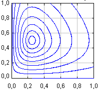

Lotka-Volterra predator-prey modelODEs are frequently used in biology to model population dynamics. The famous Lotka-Volterra model describes the evolution of two species, one of which preys (feeds) on the other, using the ODEs:
x1' = a x1 - b x1 x2 |
 |
Here, x1 represents the number of prey and x2 is the number of predators (in appropriate units so that they take continuous values in the interval [0,1]), and a, b, c, and d are parameters. The terms a x1 and -d x2 account for the reproduction rate of each species in the absence of interaction with the other and the nonlinear terms represent the effects of predation on the reduction of preys and the reproduction of the predators.
The simulation plots 10 sample trajectories in phase-space, which start from different initial conditions, for the same values of the parameters.